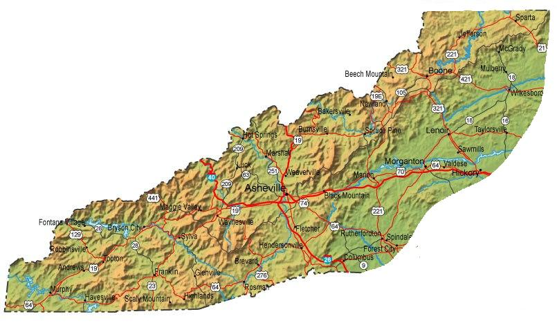

Beech Mountain, NC
Western Nort Carolina includes a very large area of national parks and forests and gives home to the Appalachian mountain range as well as the Appalachian Trail. This can be seen in the map below.

WNC gives home to lots of attractions including:
Art Loeb Trail, Brevard, NC
Always Look Out For Bears
Ski Slopes
Shuckstack Lookout Tower, GSMNP, NC
Mt. LeConte, NC